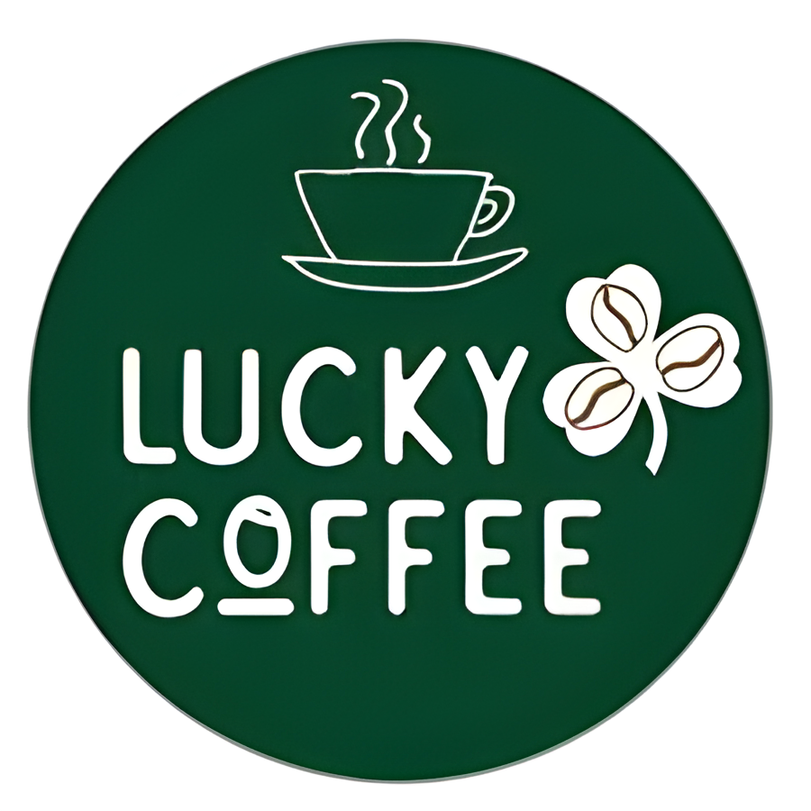

A Lucky Kávéház egy olyan hely, ahol a friss kávé illata, a meghitt hangulat és a barátságos vendéglátás találkozik. Hiszünk abban, hogy a kávézás nem csupán egy mindennapi rutin, hanem egy kis szerencsés pillanat, amely feldobja a napot, és közelebb hozza egymáshoz az embereket.
Kávéházunkban különös figyelmet fordítunk arra, hogy minden vendégünk otthon érezze magát. A belső tér kialakításánál a melegség és a kényelem vezérelt minket: puha fotelek, természetes fények és barátságos színek teszik hívogatóvá a környezetet. Nálunk nemcsak a kávéról van szó, hanem arról is, hogy a vendég kikapcsolódhasson, beszélgethessen, vagy épp nyugodtan dolgozhasson egy csésze kedvenc ital mellett.
Kínálatunkban a világ különböző tájairól származó, gondosan válogatott kávékülönlegességek kapnak helyet.
Az eszpresszó, cappuccino és latte mellett olyan ínyencségeket is kínálunk, mint a cold brew, a különleges szirupokkal ízesített kávék, vagy épp a koffeinmentes változatok. Kiemelt figyelmet szentelünk a minőségnek: kávészemeket megbízható forrásból szerzünk be, pörkölésük friss, így minden csésze garantáltan aromás és ízletes.
Természetesen gondolunk azokra is, akik nem kávéznak. Teaválasztékunkban a klasszikus fekete és zöld teáktól kezdve a gyümölcsös és gyógynövényes variációkig mindenki talál kedvére valót. Emellett friss sütemények, szendvicsek és könnyű harapnivalók várják a betérőket, amelyek tökéletesen kiegészítik az italokat.
A Lucky Kávéház nem csupán egy kávézó, hanem közösségi tér is.
Rendszeresen szervezünk kisebb kulturális eseményeket, mint például könyvbemutatók, élőzenés estek vagy kvízjátékok, amelyek még közelebb hozzák egymáshoz a vendégeket. Hiszünk abban, hogy egy kávézó lényege nem csak a kínálatban rejlik, hanem abban is, hogy összeköti az embereket, és teret ad az élményeknek.
Legyen szó reggeli indításról, délutáni pihenőről vagy esti találkozóról, a Lucky Kávéház mindig nyitott ajtókkal vár. Szeretnénk, ha nálunk mindenki megtalálná a maga szerencsés pillanatát, amelyre jó szívvel emlékszik vissza.
Lucky Kávéház – ahol minden csésze egy kis szerencsét hoz.